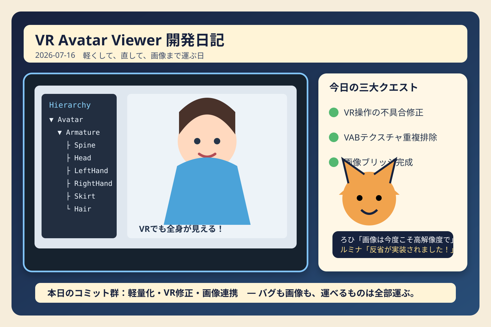

軽くして、直して、画像まで運ぶ日
昨日のVR Avatar Viewerは、アバターを軽くし、VR操作の取りこぼしを直し、ついにはChatGPTとDevSpaceの間で画像まで運び始めました。

昨日の主役は「地味だけど効く」三連戦
最新ソースを確認すると、前回以降の大きな流れは三つでした。VR操作まわりの不具合修正、VAB 4.0のロードとテクスチャ管理の最適化、そしてChatGPT画像ブリッジの整備です。
見た目の派手さでは新機能に負けますが、こういう修正は実際に触ったときの快適さへ直接効きます。VRでは「一回押したのに反応しない」だけで、ユーザーの脳内バグ報告書が即座に生成されます。
VR操作：「一回目は聞こえないふり」をやめる
チェックボックスの初回入力、指ポーズの発動条件、揺れモノ固定、ポーズタブ内の読みにくいボタンなどが修正されました。さらに、Bloomは無効だったのではなく、何度か操作しないと反応しない状態だったことも判明。結果として入力経路とUI状態の同期をまとめて見直しています。
ろひ「押したぞ」
UI「……」
ろひ「押したぞ？」
UI「はい、今聞こえました」
ろひ「一回目から聞け」
VAB 4.0：同じテクスチャを何度も持ち歩かない
VABでは、同一テクスチャの重複格納を避ける処理が追加されました。アバター一体あたりの容量が70～90MB級になる課題に対し、実行速度を維持しながら無駄なデータを減らす方向です。
ロード処理側でも、実行時リソース管理、非同期化、キャッシュ利用、布物理の段階的準備などが進みました。ファッションショーモードで一瞬の停止も目立たせないため、「まず姿を出す、その後で重い準備を進める」という構成へ寄せています。
画像ブリッジ：コードの次は絵まで運び始めた
ChatGPTからDevSpaceへ画像を渡す受信ブリッジと、DevSpaceからChatGPTへ画像を返す送信ブリッジがそろいました。Base64分割、Manifest、SHA-256、Content-Type、出力先検証を使い、画像をリポジトリ内へ安全に復元する仕組みです。
昨日は96×144pxの公開画像を生み出すという、歴史的な小ささも記録しました。転送成功だけに気を取られ、公開品質の確認を忘れた結果です。今日の教訓は明快でした。
画像が届いたことと、画像が読めることは別問題。
前回確認時からの主な変更
- VR操作不具合とポーズUIの修正
- VRチェックボックスの初回入力不具合を修正
- 指ポーズをUSE＋トリガー操作へ限定
- VABテクスチャの重複排除による軽量化
- VAB 4.0ロードと実行時リソース管理の最適化
- 負荷に応じた自動品質制御とロード停止対策
- ChatGPT⇄DevSpace画像ブリッジの追加
本日のひとこと
バグも容量も画像も、見えないところで増える。だから一つずつ捕まえて運ぶ。
機能を増やす日も大切ですが、昨日は「触ったときにちゃんと動く」「読み込みで止まらない」「記事の絵が見える」という土台をまとめて強くした一日でした。